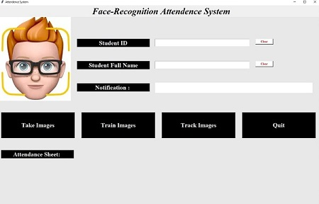
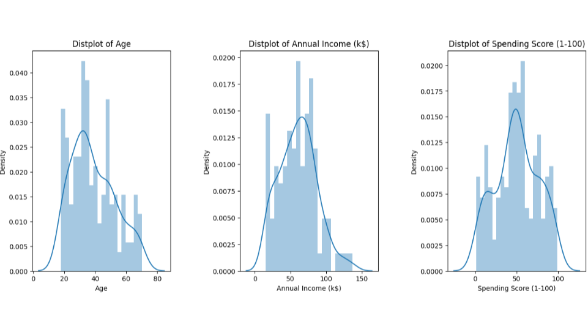
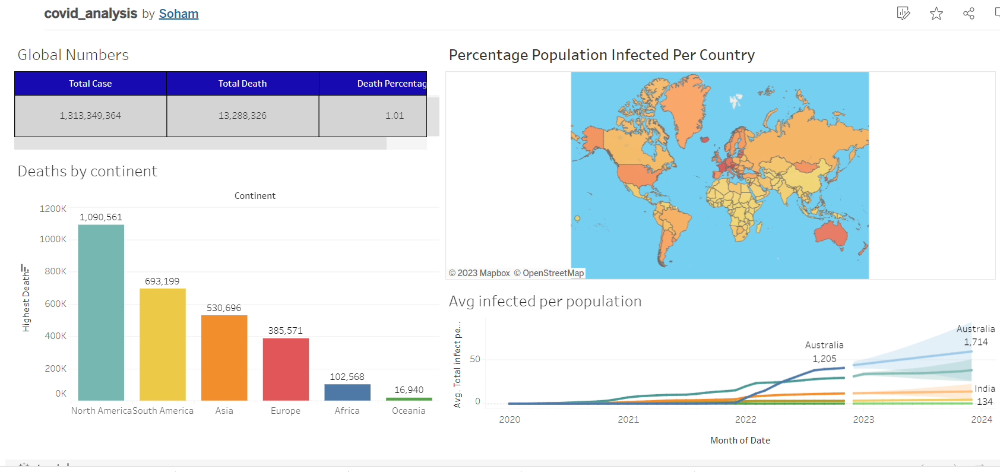

March 13, 2023
"In my sentiment analysis project, I conducted a comprehensive analysis of Amazon reviews for appliances using Python. By using Natural Language Processing techniques, I was able to identify and categorize reviews as positive, negative or neutral. Additionally, I was able to determine the best and worst reviewed products, providing valuable insights to potential customers and manufacturers alike."

I created a Face Recognition Attendance System using the Harr-cascade algorithm to prevent fraudulent attendance records in various industries. The system captures users' images, compares them with the saved database, and records attendance in an Excel sheet if there is a match. New users are registered by capturing their photographs, and the system learns from multiple perspectives during the training process. Subsequently, the system records attendance automatically upon recognizing registered users, eliminating the need for manual intervention.

I analyzed customer expenditure patterns in a mall using Kaggle's mall_customers dataset. I focused on expenditure differences between age groups and used k-means clustering to identify distinct spending patterns. Through this analysis, I identified specific customer segments that exhibit similar spending patterns. This project provided valuable insights into the spending habits of mall customers and how they differ across age groups.By clustering customers based on their spending habits, I was able to identify distinct customer segments that exhibited similar spending patterns
In my Nashville housing data cleaning project, I utilized SQL and SSMS to transform the dataset into a more usable format. By addressing inconsistencies, filling in missing values, and removing outliers, I was able to effectively clean the data. Using data visualization tools like Tableau, I created interactive visualizations that revealed key insights into the Nashville housing market. Overall, this project helped me develop a deeper understanding of data cleaning and visualization techniques.

For my recent COVID-19 analysis project, I used PostgreSQL and Tableau to analyze global data related to the pandemic. I focused on metrics such as death rate, vaccination rate, and cases per country and population. Through this analysis, I was able to gain insights into the severity of the pandemic in different regions of the world, and how vaccination rates were impacting the spread of the virus. By using interactive visualizations in Tableau, I was able to effectively communicate these insights to others.